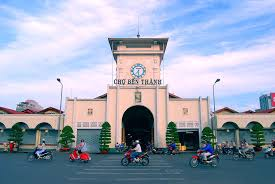
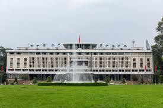
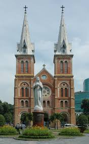
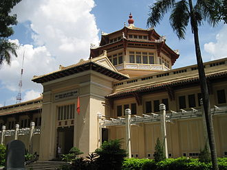
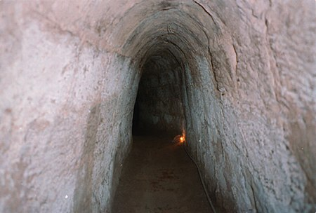

Giới thiệu du lịch của thành phố Hồ Chí Minh
Mục lục các địa điểm
Chợ Bến Thành
Đây là một trong những địa điểm du lịch Thành phố Hồ Chí Minh nổi tiếng nhất nằm ngay trung tâm thành phố và luôn tấp nập người ra vào mua bán, du khách check in mỗi ngày.
Chợ Bến Thành buôn bán tất tần tật những mặt hàng từ thực phẩm, vải vóc, quần áo, đồ gia dụng, đặc sản Sài Gòn,… và quan trọng là khu ẩm thực cực kỳ hấp dẫn ở chợ và những góc check in ấn tượng sẽ làm bạn luôn muốn lưu lại nơi đây thật lâu.
Thông tin:
- Địa chỉ: Đường Lê Lợi, phường Bến Thành, quận 1.
- Giờ mở cửa: 7h - 20h.

Chợ Bến Thành(Wikipedia)
Dinh Độc Lập
Dinh Độc Lập hay còn gọi là hội trường Thống Nhất, đây là một công trình được xây dựng bởi người Pháp, từ thời Pháp thuộc. Đối với người dân Sài Gòn, Dinh Độc Lập là một di tích lịch sử mang ý nghĩa hòa bình và toàn vẹn lãnh thổ. Nơi đây đã được công nhận là 1 trong 10 di tích quốc gia đặc biệt của Việt Nam vào năm 2009.
Thông tin:
- Địa chỉ: 135 Đường Nam Kỳ Khởi Nghĩa, phường Bến Nghé, quận 1.
- Giờ mở cửa: 7h30 - 11h; 13h30 - 17h.

Dinh Độc Lập(Wikipedia)
Nhà thờ Đức Bà
Nhà thờ Đức Bà là địa điểm du lịch thành phố Hồ Chí Minh mà bạn nhất định phải ghé đến. Nhà thờ Đức Bà là một công trình kiến trúc độc đáo mang đậm phong cách Châu Âu, là nơi sinh hoạt và tổ chức các buổi Thánh lễ cho những người theo đạo Công giáo ở Sài Thành.
Ghé đến tham quan nhà thờ Đức Bà, bạn có thể đến vào buổi sáng để có thể ngắm được trọn vẹn vẻ đẹp của nhà thờ dưới ánh sáng ban ngày, check in ở mọi ngóc ngách trong nhà thờ đậm chất Gothic,… đặc biệt nhà thờ luôn đón chào những du khách, người dân và bất kỳ ai đến đây để nghe giảng đạo.
Thông tin:
- Địa chỉ: 01 Công xã Paris, phường Bến Nghé, quận 1.
- Giờ mở cửa: 6h - 20h.

Nhà thờ Đức Bà(Wikipedia)
Bảo tàng lịch sử Việt Nam
Bảo tàng lịch sử Việt Nam được xây dựng và hoạt động từ những năm đầu thế kỷ 20, là nơi lưu giữ và bảo tồn những hình ảnh, cổ vật từ thuở sơ khai đến nay. Bảo tàng lịch sử Việt Nam thu hút phần lớn những du khách yêu lịch sử và kiến trúc pha trộn giữa 2 phong cách Á – Âu độc đáo.
Ngoài là nơi lưu giữ nét văn hoa truyền thống của đất nước, bảo tàng lịch sử Việt Nam còn là một trong những điểm du lịch thành phố Hồ Chí Minh ấn tượng với những góc check in đẹp. Đây luôn là điểm đến thú vị trong những lịch trình của tour du lịch Hồ Chí Minh được yêu thích nhất.
Thông tin:
- Địa chỉ: Số 2 đường Nguyễn Bỉnh Khiêm, phường Bến Nghé, quận 1.
- Giờ mở cửa: 8h - 17h.

Bảo tàng lịch sử Việt Nam(Wikipedia)
Địa đạo Củ Chi
Địa đạo Củ Chi là di tích lịch sử nằm ở ngoại ô, cách trung tâm Tp.HCM khoảng 70km. Đây là một trong những điểm nên đến ở Sài Gòn được yêu thích, đặc biệt là đối với các du khách nước ngoài.
Nơi đây là di tích quốc gia đặc biệt, gắn liền với lịch sử chiến tranh Việt Nam, từng là căn cứ địa quan trọng và cũng là nơi sinh hoạt chung bao gồm bệnh xá, nhà bếp, nơi làm việc,… của quân đội ta trong cuộc kháng chiến chống quân xâm lược, giành lại toàn vẹn lãnh thổ.
Thông tin:
- Địa chỉ: Ấp Bến Đình, xã Nhuận Đức, huyện Củ Chi.
- Giờ mở cửa: 8h - 17h.

Một phần địa đạo Củ Chi(Wikipedia)
Phố đi bộ Nguyễn Huệ
Phố đi bộ Nguyễn Huệ từ lâu đã là một điểm đến thú vị ở Sài Gòn đối với người dân bản địa và cả các du khách. Đây là một trong những địa điểm vui chơi ở Quận 1 được nhiều người ghé tới đặc biệt vào mỗi tối và dịp cuối tuần.
Ở phố đi bộ Nguyễn Huệ, bạn sẽ có cơ hội tham gia vào các hoạt động như trình diễn thời trang, nghệ thuật đường phố, vui chơi giải trí, ẩm thực,... rất đặc sắc. Nơi đây là điểm check in hot nhất nhì Sài Thành mà bạn không thể bỏ lỡ trong chuyến du lịch Sài Gòn của mình.
Thông tin:
- Địa chỉ: Đường Nguyễn Huệ, phường Bến Nghé, quận 1.
- Giờ mở cửa: Cả ngày.

Phố đi bộ Nguyễn Huệ(Wikipedia)
Thảo Cầm Viên
Một địa điểm du lịch thành phố Hồ Chí Minh phù hợp cho mọi lứa tuổi đó là Thảo Cầm Viên. Đây là khu bảo tồn động thực vật lớn ở trung tâm thành phố, có không gian rộng rãi với những khu vui chơi giải trí, khu nuôi dưỡng động vật hoang dã, khu trồng và chăm sóc thực vật,...rất thoáng mát.
Thảo Cầm Viên là một trong những điểm nên đến ở Sài Gòn thích hợp để bạn khám phá các loại động thực vật quý hiếm và thư giãn sau những ồn ào ở thành phố.
Thông tin:
- Địa chỉ: Số 2 đường Nguyễn Bỉnh Khiêm, phường Bến Nghé, quận 1.
- Giờ mở cửa: 7h - 18h30.

Thảo Cầm Viên(Wikipedia)
Bảo tàng tranh 3D Artinus
Là một bảo tàng tranh 3D lớn nhất Sài Gòn, Artinus là nơi check in cực hấp dẫn với nhiều du khách và giới trẻ Sài Thành. Bảo tàng tranh 3D Artinus có không gian kích thích sự sáng tạo ở mọi lứa tuổi qua từng khung ảnh. Bạn sẽ cảm thấy mình thật bé nhỏ khi đứng giữa những bức tranh 3D ấn tượng trong bảo tàng.
Bên trong bảo tàng Artinus, những bức tranh 3D được sắp xếp theo 9 chủ đề khác nhau như Đại Dương, Việt Nam, Ai Cập, Tình Yêu, Thần Tiên,... Nơi đây không chỉ là một điểm check in, tham quan mà còn là địa điểm chụp ảnh cưới của rất nhiều cặp đôi sáng tạo khi đến với Artinus.
Thông tin:
- Địa chỉ: Số 2 - 4 đường số 9, khu dân cư Him Lam, phường Tân Hưng, quận 7.
- Giờ mở cửa: 9h - 22h.

Bảo tàng tranh 3D Artinus(Wikipedia)
Tòa nhà Bitexco
Tòa nhà Bitexco hay còn gọi là Tháp tài chính Bitexco, đây là một trong những tòa nhà cao nhất ở thành phố Hồ Chí Minh từ những năm 2010, sau này đã có tòa tháp khác cao hơn như Landmark 81 nhưng Bitexco mãi là một trong những biểu tượng của Sài Thành, đánh dấu cho sự phát triển mới của thành phố mang tên Bác.
Tòa nhà Bitexco có sân đậu trực thăng đầu tiên ở Việt Nam được đặt trên tầng 52, nơi đây còn là một trong những trung tâm thương mại sang trọng bậc nhất Sài Gòn. Có cơ hội ghé đến đây, bạn sẽ choáng ngợp với không gian hiện đại và sang chảnh của tòa nhà, bên cạnh đó thì bên ngoài tòa nhà cũng là một trong những background ấn tượng nhất thu hút rất nhiều giới trẻ ghé đến.
Thông tin:
- Địa chỉ: Số 19 - 25 đường Nguyễn Huệ,phường Bến Nghé, quận 1.
- Giờ mở cửa: 9h - 22h.

Tòa nhà Bitexco(Wikipedia)
Công viên nước Đầm Sen
Nhắc đến du lịch Sài Gòn tất nhiên cũng phải nhắc đến công viên nước Đầm Sen - một trong các khu du lịch ở Sài Gòn được yêu thích dành cho mọi lứa tuổi. Công viên nước Đầm Sen có diện tích lên đến 3000m2, là một trong những điểm nên đến ở Sài Gòn thu hút rất nhiều người dân và du khách.
Nơi đây được chia thành 2 khu công viên văn hóa là nơi tổ chức các sự kiện văn hóa, quảng bá, nhạc kịch,... và khu công viên nước là nơi có rất nhiều trò chơi hấp dẫn như tàu lượn siêu tốc, trượt nước, hồ bơi, nhà phao,... Ngoài ra, nơi đây còn có thủy cung là nơi sinh sống của hàng nghìn cá thể dưới nước rất thú vị.
Thông tin:
- Địa chỉ: Số 3 đường Hòa Bình,phường 3, quận 11.
- Giờ mở cửa: 9h - 18h.

Công viên nước Đầm Sen(Wikipedia)
Đây là 10 địa điểm được cả người dân địa phương và những du khách thường hay quan tâm nhất khi muốn khám phá và tận hưởng du lịch ở thành phố Hồ Chí Minh.